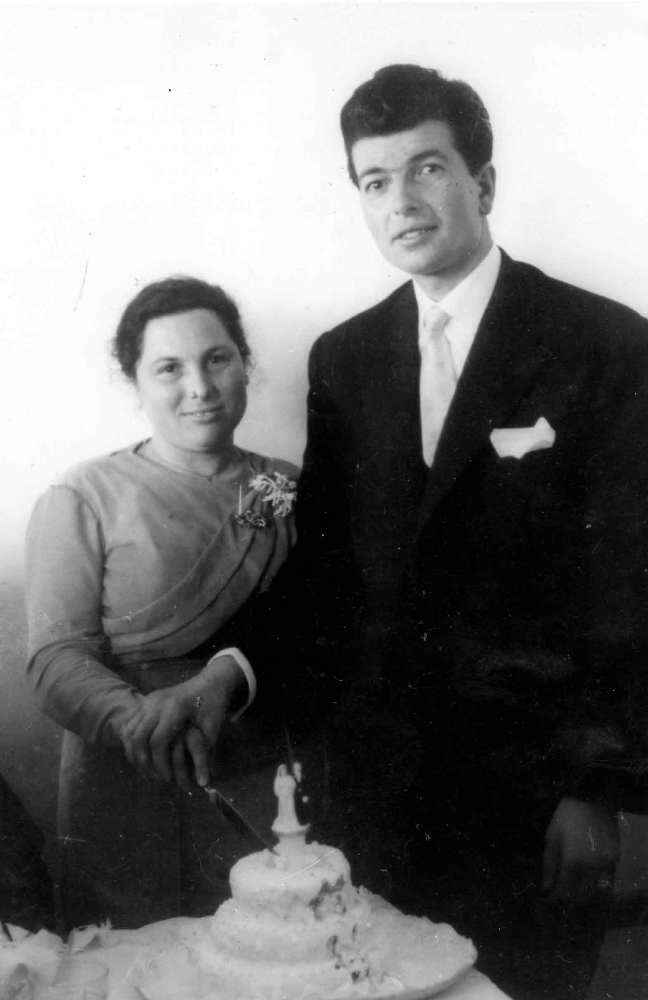

Descricao:
Os noivos cortam o bolo de casamento

Data: 1961-01-15
Local: Desconhecido
Quem: Ana de Lourdes de Oliveira Chamine; Antonio Oliveira Machado
Descricao:
Antonio Machado e a sua esposa, dona Ana atras do balcao da taberna Casa Machado.
Data: 2000-09-12
Local: Casa Machado, Afurada, Vila Nova de Gaia
Quem: Ana de Lourdes de Oliveira Chamine; Antonio Oliveira Machado